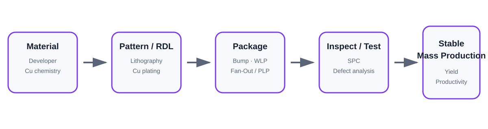
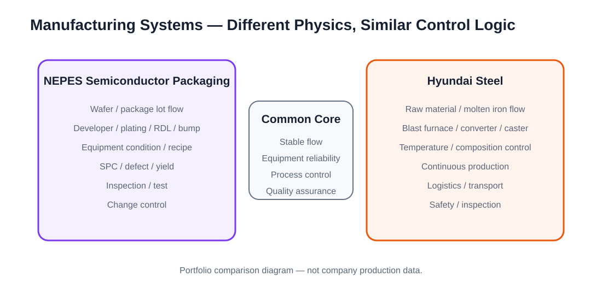

Core takeaway
Packaging yield is created by the interaction of material quality, process chemistry, equipment condition, inspection, SPC, and change control—not by one unit process alone.
Bumping → WLP → Fan-Out / PLP → Test
NEPES의 공식 portfolio를 바탕으로, wafer-level interconnect와 packaging을 하나의 process-integration flow로 정리했습니다. RDL과 bump는 단순 배선 구조가 아니라 lithography·wet chemistry·plating·inspection이 반복적으로 연결되는 제조 결과입니다.
Developer와 Cu plating은 yield에 직접 연결되는 공정 변수
현장 방문 후 NEPES의 process-engineering 업무를 조사하면서 도금액 분석·SPC·불량 개선·수율 향상이 실제 직무로 연결된다는 점을 확인했습니다.
Equipment condition is a production variable
장비는 공정을 실행하는 수단이 아니라 process stability와 productivity를 결정하는 변수입니다. NEPES 장비직무는 setup, preventive maintenance, condition optimization, yield/productivity improvement, new-tool qualification and production stabilization까지 포함합니다.
Change control prevents customer issues before final inspection
NEPES 품질 직무 자료의 internal quality verification과 change-point management를 바탕으로, material lot·equipment·recipe·maintenance 변화가 어떻게 검증과 traceability의 대상이 되는지 정리했습니다.
Manufacturing scale was different, but the control logic was similar

현대제철에서는 고온의 쇳물과 철강 반제품이 생산되고 공정 사이를 이동하는 대규모 제조 흐름을 직접 관찰했습니다.
반도체와 철강의 물리는 다르지만 stable flow, equipment reliability, process control, quality assurance가 함께 움직여야 한다는 점은 공통적이었습니다.
재료공학 지식을 양산·품질·장비 업무로 연결
| Career area | What I connected |
|---|---|
| Process Engineering | plating chemistry · process window · SPC · defect root cause |
| Mass Production | repeatability · throughput · yield · stabilization |
| Quality | verification · change control · traceability · customer quality |
| Equipment | setup · PM · troubleshooting · parameter optimization |